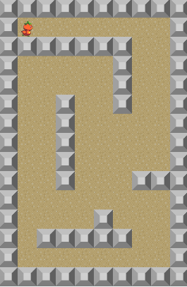

はじめに
RPGなどで固定マップで単純な当たり判定を行いたい時は、Mapデータと当たり判定データを読み込んで行う方法が便利です。 今回は、enchant.jsにあったMapクラスを参考にphina.js版を作ってみました。

コンストラクタ
var map = phina.util.Map({
tileWidth: 64,
tileHeight: 64,
imageName: 'tile',
mapData: data,
collisionData: collision,
}).addChildTo(this);
プロパティ
| プロパティ | 説明 |
|---|---|
| tileWidth | タイルの幅 |
| tileHeight | タイルの高さ |
| imageName | タイルセット画像の名前 |
| mapData | マップデータの2次元配列 |
| collisionData | タイル衝突判定用の2次元配列 |
メンバ関数
| 関数 | 説明 |
|---|---|
| hitTest | マップとの衝突判定を行う(座標から) |
| hitTestByIndex | マップとの衝突判定を行う(インデックスから) |
| checkTile | タイルが何か調べる(座標から) |
| checkTileByIndex | タイルが何か調べる(インデックスから) |
| setTile | タイルを更新する |
| getChild | 子要素を得る（座標から） |
| getChildByIndex | 子要素を得る（インデックスから） |
おわりに
本格的なマップ作成には、タイルマップエディタが必要になってくると思いますが、簡単なゲームであれば、この程度の機能でも使えるのではないでしょうか。